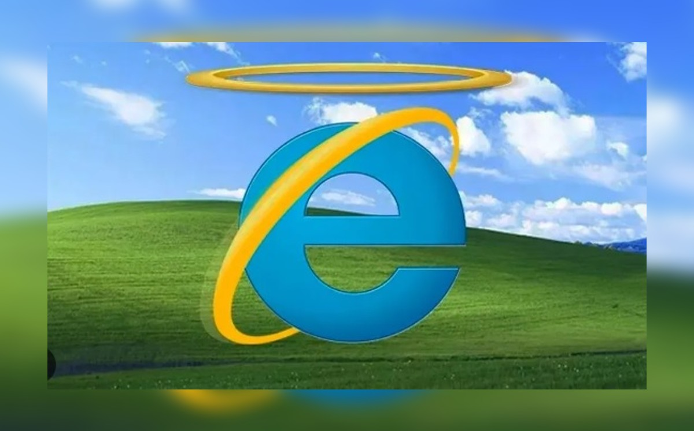

Microsoft presentó Internet Explorer en agosto de 1995, basándose en una versión de Mosaic. Internet Explorer 1 no estaba incluido en Windows 95, pero ante el éxito de Netscape y la creciente popularidad de la web, Microsoft pisó el acelerador: Se publicaron versiones prácticamente cada año: IE 2 (noviembre de 1995), IE 3 (agosto de 1996), IE 4 (septiembre de 1997), IE 5 (marzo de 1999), IE 5.5 (julio de 2000) e IE 6 (agosto de 2001). IE se incluyó en Windows a partir de Windows 95 OSR1 (febrero de 1996), lo que dio lugar a demandas por abuso de posición dominante en Estados Unidos y Europa. Cada versión incluía nuevas características avanzadas, superando a Netscape en muchos aspectos. A partir del año 2000, Internet Explorer dominó absolutamente el mercado y Microsoft pisó el freno: Las versiones se espaciaron: Internet Explorer 6 SP1 (septiembre de 2002), Internet Explorer 6 SP2 (agosto de 2004). Las nuevas versiones no incluían prácticamente nuevas características. En 2003, Microsoft anunció que sólo se publicarían nuevas versiones de Internet Explorer cuando cuando se publicaran nuevas versiones de Windows (como así ha sido).
